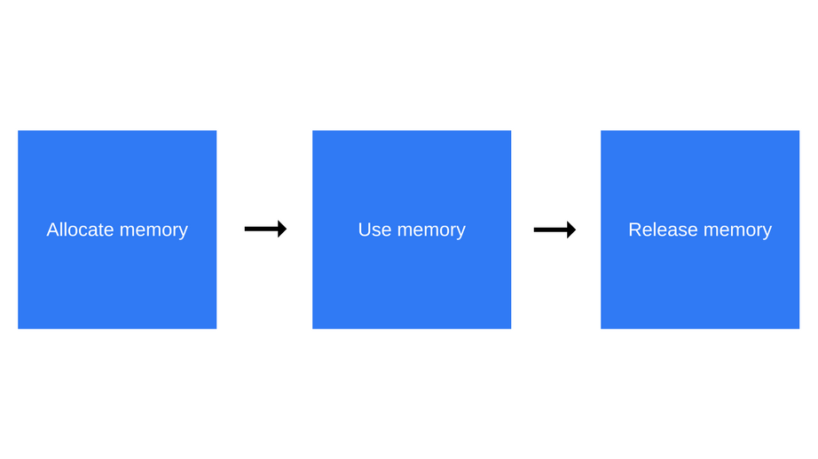

内存生命周期
JavaScript 环境中分配的内存一般有如下生命周期：
- 内存分配：当我们声明变量、函数、对象的时候，系统会自动为他们分配内存
- 内存使用：即读写内存，也就是使用变量、函数等
- 内存回收：使用完毕，由 垃圾回收机制 自动回收不再使用的内存
🌰 代码示例：
// 在内存中给数值变量分配空间
var a = 20;
// 使用内存
console.log(a + 80);
// 使用完毕之后，释放内存空间
a = null;
内存分配
值的初始化
为了不让开发者费心分配内存，JavaScript 在定义变量时就完成了内存分配。
// 给数值变量分配内存
var a = 123;
// 给字符串分配内存
var b = 'Hello';
// 给对象及其包含的值分配内存
var c = {
a: 1,
b: null,
};
// 给数组及其包含的值分配内存
var d = [0, null, undefined, 'Hello'];
// 给函数分配内存
function e() {
return 1;
}
// 函数表达式也能分配内存
someElement.addEventListener(
'click',
function () {
someElement.style.backgroundColor = 'blue';
},
false
);
函数调用分配
函数调用结果分配对象内存。
// 分配 Date 对象实例
var f = new Date();
// 分配 DOM 元素
var g = document.createElement('div');
分配新变量或新对象。
var s = 'bingo';
var q = s.substr(0, 3);
// q 是一个新的字符串
// 因为字符串是不可变量
// JavaScript 可能决定不分配内存
// 只是存储 [0-3] 的范围
var x = ['a', 'b'];
var y = ['c', 'd'];
var z = x.concat(y);
// 新数组有四个元素 是 x 和 y 连接的结果
内存使用
使用值的过程实际上是对分配内存进行读取与写入的操作。读取与写入可能是写入一个变量或者一个对象的属性值，甚至传递函数的参数。
内存回收
大多数内存管理的问题都在这个阶段。在这里最艰难的任务是找到所分配的内存确实已经不再需要了。它往往要求开发者来确定在程序中哪一块内存不再需要并且释放它。
高级语言解释器嵌入了 垃圾回收器机制，它的主要工作是跟踪内存的分配和使用，以便当分配的内存不再使用时，自动释放它。这只能是一个近似的过程，因为要知道是否仍然需要某块内存是无法判定的（无法通过某种算法解决）。